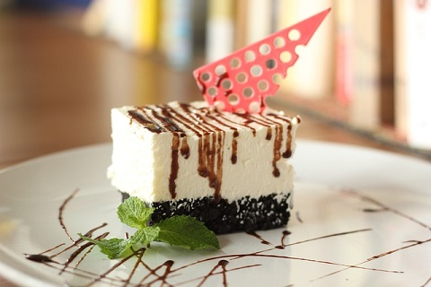

Ingredients
- 3 egg whites
- 1 pinch salt
- 1 cup white sugar
- 1 tablespoon cornstarch
- 1 teaspoon lemon juice
Directions
- Preheat oven to 300 degrees F (150 degrees C). Line a sheet pan with parchment paper. Draw a 9
inch
circle on the parchment. An easy way to do this is to draw around the outside of a 9 inch pan
with a
pencil.
- In a large bowl, beat egg whites on high speed until soft peaks form. Add 3/4 cup of the sugar
gradually, while continuing to whip. Make sure sugar is completely dissolved. Mix together the
remaining
1/4 cup sugar with the cornstarch; lightly fold into meringue with lemon juice.
- Spread a layer of meringue to fit circle on parchment, approximately 1/4 inch thick. With
remainder
of
mixture, pipe or spoon swirls around the edges to form a shallow bowl shape.
- In a large bowl, combine the cream and half a cup of confectioners sugar, and whip until
thickened.
Decorate with fruit of your choice; strawberries are excellent.
